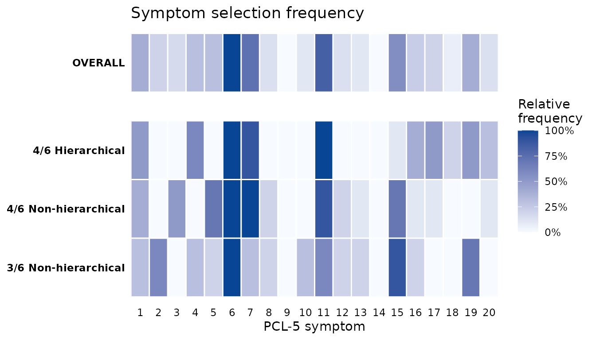

Validating a shared definition across sites
Source:vignettes/multi-site-validation.Rmd
multi-site-validation.RmdThis vignette illustrates how two sites that cannot share patient-level data, can still be used to derive and validate a simplified PTSD definition.
The multi-site problem
Collaborations across clinics, registries, or countries are often bound by privacy rules and data-use agreements that forbid moving patient records between sites. Hence, pooling data is often not possible. However, as a simplified definition is fully described by the symptom indices it uses and the number required, optimization can take palace a one site and validation at another without sharing the original data but only symptom sets constituting the new definitions.
In this vignette, one site has data from the veterans with a high PTSD prevalence and another has population data with a low PTSD prevalence. The first site derives a definition and inspects which symptoms its optimization selects. It shares the definitions as a JSON file. The general-population site then applies that definition locally, and we compare how it performs in each sample.
Requirements for the input data
Each site standardizes its own data with
rename_ptsd_columns(): the 20 PCL-5 items in their standard
order, scored 0 to 4, with no missing values, plus any identifier
columns named in id_col. The full contract is in the Getting started vignette. For this
vignette, we subset the veteran sample to keep the optimization
fast.
Site 1: deriving the definition in the veteran sample
The veteran site optimizes on its own data.
compare_optimizations() runs the three default rules and
returns one object holding the results; nothing patient-level leaves the
site.
library(PTSDdiag)
library(dplyr)
data("simulated_ptsd")
vet <- rename_ptsd_columns(simulated_ptsd[1:500, ],
id_col = c("patient_id", "age", "sex"))
comp_vet <- compare_optimizations(
vet,
n_top = 10,
score_by = "accuracy",
show_progress = FALSE
)Before sharing anything, the site can look at which symptoms its
optimization keeps selecting. plot_symptom_frequency()
shows, for each rule, how often each of the 20 symptoms appears among
the top combinations, with a pooled OVERALL row.
plot_symptom_frequency(comp_vet, type = "relative")
The symptoms whose tiles are dark across the rules are the core symptoms the derivation settles on. These are stable features of the veteran sample, and the question for the collaboration is whether a definition built from them also works elsewhere.
Sharing the definitions without sharing data
Rather than commit to a single winner, the site carries forward the
top five combinations from each of the three rules, fifteen candidate
definitions in all. This is closer to real practice, where a
collaboration weighs several promising definitions rather than betting
on one. extract_definitions() pulls them straight from the
comparison object: it keeps the top n combinations of each
rule and reads, for each, how many symptoms must be present and whether
all four clusters are required, so the researcher chooses only how many
to carry.
definitions <- extract_definitions(comp_vet, n = 5)
# The shared object: only symptom numbers and the rule to apply them
lapply(definitions, function(d) d$symptoms)
#> $`4/6 Hierarchical`
#> $`4/6 Hierarchical`[[1]]
#> [1] 1 6 7 11 16 17
#>
#> $`4/6 Hierarchical`[[2]]
#> [1] 1 6 7 11 16 19
#>
#> $`4/6 Hierarchical`[[3]]
#> [1] 4 6 7 11 16 19
#>
#> $`4/6 Hierarchical`[[4]]
#> [1] 1 6 7 11 15 17
#>
#> $`4/6 Hierarchical`[[5]]
#> [1] 1 4 6 11 16 19
#>
#>
#> $`4/6 Non-hierarchical`
#> $`4/6 Non-hierarchical`[[1]]
#> [1] 1 3 6 7 11 15
#>
#> $`4/6 Non-hierarchical`[[2]]
#> [1] 3 5 6 7 11 15
#>
#> $`4/6 Non-hierarchical`[[3]]
#> [1] 5 6 7 11 15 16
#>
#> $`4/6 Non-hierarchical`[[4]]
#> [1] 1 5 6 7 11 15
#>
#> $`4/6 Non-hierarchical`[[5]]
#> [1] 3 5 6 7 12 15
#>
#>
#> $`3/6 Non-hierarchical`
#> $`3/6 Non-hierarchical`[[1]]
#> [1] 2 6 7 8 10 15
#>
#> $`3/6 Non-hierarchical`[[2]]
#> [1] 4 6 11 15 16 19
#>
#> $`3/6 Non-hierarchical`[[3]]
#> [1] 5 6 7 8 10 15
#>
#> $`3/6 Non-hierarchical`[[4]]
#> [1] 6 7 10 11 15 19
#>
#> $`3/6 Non-hierarchical`[[5]]
#> [1] 6 11 12 15 16 19This object is everything the other site needs, and it holds nothing
but symptom numbers and rules. No participant, score, or demographic is
in it, so it can be shared freely. write_combinations()
serializes a set of combinations to a small JSON file for transfer, as
shown in the Validating abbreviated symptom
definitions vignette.
Evaluating every definition in a sample
Alongside the fifteen derived definitions we include ICD-11 as a
fixed published benchmark. ICD-11 is the same rule everywhere, so each
site computes it locally and nothing about it is shared.
evaluate_definitions() applies each shared definition with
its own rule, adds ICD-11, and scores all of them against the sample’s
full DSM-5-TR diagnosis. Because it needs only the definitions and a
data frame, the identical call runs at either site.
Performance in the derivation sample
The veteran site records how every definition performs on its own patients, the baseline the other site will be read against.
evaluate_definitions(vet, definitions, include_icd11 = TRUE)
#> Scenario Total Diagnosed
#> 1 PTSD_orig 465 (93%)
#> 2 4/6 Hierarchical (1, 6, 7, 11, 16, 17) 411 (82.2%)
#> 3 4/6 Hierarchical (1, 6, 7, 11, 16, 19) 412 (82.4%)
#> 4 4/6 Hierarchical (4, 6, 7, 11, 16, 19) 410 (82%)
#> 5 4/6 Hierarchical (1, 6, 7, 11, 15, 17) 409 (81.8%)
#> 6 4/6 Hierarchical (1, 4, 6, 11, 16, 19) 411 (82.2%)
#> 7 4/6 Non-hierarchical (1, 3, 6, 7, 11, 15) 468 (93.6%)
#> 8 4/6 Non-hierarchical (3, 5, 6, 7, 11, 15) 463 (92.6%)
#> 9 4/6 Non-hierarchical (5, 6, 7, 11, 15, 16) 461 (92.2%)
#> 10 4/6 Non-hierarchical (1, 5, 6, 7, 11, 15) 466 (93.2%)
#> 11 4/6 Non-hierarchical (3, 5, 6, 7, 12, 15) 464 (92.8%)
#> 12 3/6 Non-hierarchical (2, 6, 7, 8, 10, 15) 477 (95.4%)
#> 13 3/6 Non-hierarchical (4, 6, 11, 15, 16, 19) 483 (96.6%)
#> 14 3/6 Non-hierarchical (5, 6, 7, 8, 10, 15) 479 (95.8%)
#> 15 3/6 Non-hierarchical (6, 7, 10, 11, 15, 19) 481 (96.2%)
#> 16 3/6 Non-hierarchical (6, 11, 12, 15, 16, 19) 481 (96.2%)
#> 17 ICD-11 453 (90.6%)
#> Total Non-Diagnosed True Positive True Negative Newly Diagnosed
#> 1 35 (7%) 465 35 0
#> 2 89 (17.8%) 411 35 0
#> 3 88 (17.6%) 411 34 1
#> 4 90 (18%) 410 35 0
#> 5 91 (18.2%) 409 35 0
#> 6 89 (17.8%) 410 34 1
#> 7 32 (6.4%) 460 27 8
#> 8 37 (7.4%) 457 29 6
#> 9 39 (7.8%) 456 30 5
#> 10 34 (6.8%) 458 27 8
#> 11 36 (7.2%) 457 28 7
#> 12 23 (4.6%) 462 20 15
#> 13 17 (3.4%) 465 17 18
#> 14 21 (4.2%) 463 19 16
#> 15 19 (3.8%) 464 18 17
#> 16 19 (3.8%) 464 18 17
#> 17 47 (9.4%) 448 30 5
#> Newly Non-Diagnosed True Cases False Cases Sensitivity Specificity PPV
#> 1 0 500 0 1.0000 1.0000 1.0000
#> 2 54 446 54 0.8839 1.0000 1.0000
#> 3 54 445 55 0.8839 0.9714 0.9976
#> 4 55 445 55 0.8817 1.0000 1.0000
#> 5 56 444 56 0.8796 1.0000 1.0000
#> 6 55 444 56 0.8817 0.9714 0.9976
#> 7 5 487 13 0.9892 0.7714 0.9829
#> 8 8 486 14 0.9828 0.8286 0.9870
#> 9 9 486 14 0.9806 0.8571 0.9892
#> 10 7 485 15 0.9849 0.7714 0.9828
#> 11 8 485 15 0.9828 0.8000 0.9849
#> 12 3 482 18 0.9935 0.5714 0.9686
#> 13 0 482 18 1.0000 0.4857 0.9627
#> 14 2 482 18 0.9957 0.5429 0.9666
#> 15 1 482 18 0.9978 0.5143 0.9647
#> 16 1 482 18 0.9978 0.5143 0.9647
#> 17 17 478 22 0.9634 0.8571 0.9890
#> NPV Accuracy
#> 1 1.0000 1.000
#> 2 0.3933 0.892
#> 3 0.3864 0.890
#> 4 0.3889 0.890
#> 5 0.3846 0.888
#> 6 0.3820 0.888
#> 7 0.8438 0.974
#> 8 0.7838 0.972
#> 9 0.7692 0.972
#> 10 0.7941 0.970
#> 11 0.7778 0.970
#> 12 0.8696 0.964
#> 13 1.0000 0.964
#> 14 0.9048 0.964
#> 15 0.9474 0.964
#> 16 0.9474 0.964
#> 17 0.6383 0.956The first row is the full DSM-5-TR diagnosis itself, the reference. Below it are the fifteen derived definitions, grouped by rule, followed by ICD-11, each scored against the reference.
Validating in the general-population sample
The general-population site receives only the definitions printed above. It runs the same evaluation on its own patients. The veteran site never sees these records, and this site never sees the veteran records.
data("simulated_ptsd_genpop")
# simulated_ptsd_genpop also carries paired CAPS-5 columns (C1..C20); here we
# use only the PCL-5 items, so we select those before standardising.
genpop <- rename_ptsd_columns(
simulated_ptsd_genpop[, c("patient_id", "age", "sex", paste0("S", 1:20))],
id_col = c("patient_id", "age", "sex")
)
evaluate_definitions(genpop, definitions, include_icd11 = TRUE)
#> Scenario Total Diagnosed
#> 1 PTSD_orig 252 (21%)
#> 2 4/6 Hierarchical (1, 6, 7, 11, 16, 17) 144 (12%)
#> 3 4/6 Hierarchical (1, 6, 7, 11, 16, 19) 144 (12%)
#> 4 4/6 Hierarchical (4, 6, 7, 11, 16, 19) 140 (11.67%)
#> 5 4/6 Hierarchical (1, 6, 7, 11, 15, 17) 148 (12.33%)
#> 6 4/6 Hierarchical (1, 4, 6, 11, 16, 19) 148 (12.33%)
#> 7 4/6 Non-hierarchical (1, 3, 6, 7, 11, 15) 221 (18.42%)
#> 8 4/6 Non-hierarchical (3, 5, 6, 7, 11, 15) 218 (18.17%)
#> 9 4/6 Non-hierarchical (5, 6, 7, 11, 15, 16) 221 (18.42%)
#> 10 4/6 Non-hierarchical (1, 5, 6, 7, 11, 15) 216 (18%)
#> 11 4/6 Non-hierarchical (3, 5, 6, 7, 12, 15) 213 (17.75%)
#> 12 3/6 Non-hierarchical (2, 6, 7, 8, 10, 15) 346 (28.83%)
#> 13 3/6 Non-hierarchical (4, 6, 11, 15, 16, 19) 330 (27.5%)
#> 14 3/6 Non-hierarchical (5, 6, 7, 8, 10, 15) 340 (28.33%)
#> 15 3/6 Non-hierarchical (6, 7, 10, 11, 15, 19) 357 (29.75%)
#> 16 3/6 Non-hierarchical (6, 11, 12, 15, 16, 19) 331 (27.58%)
#> 17 ICD-11 279 (23.25%)
#> Total Non-Diagnosed True Positive True Negative Newly Diagnosed
#> 1 948 (79%) 252 948 0
#> 2 1056 (88%) 142 946 2
#> 3 1056 (88%) 141 945 3
#> 4 1060 (88.33%) 138 946 2
#> 5 1052 (87.67%) 145 945 3
#> 6 1052 (87.67%) 145 945 3
#> 7 979 (81.58%) 207 934 14
#> 8 982 (81.83%) 202 932 16
#> 9 979 (81.58%) 206 933 15
#> 10 984 (82%) 203 935 13
#> 11 987 (82.25%) 197 932 16
#> 12 854 (71.17%) 225 827 121
#> 13 870 (72.5%) 225 843 105
#> 14 860 (71.67%) 229 837 111
#> 15 843 (70.25%) 233 824 124
#> 16 869 (72.42%) 234 851 97
#> 17 921 (76.75%) 221 890 58
#> Newly Non-Diagnosed True Cases False Cases Sensitivity Specificity PPV
#> 1 0 1200 0 1.0000 1.0000 1.0000
#> 2 110 1088 112 0.5635 0.9979 0.9861
#> 3 111 1086 114 0.5595 0.9968 0.9792
#> 4 114 1084 116 0.5476 0.9979 0.9857
#> 5 107 1090 110 0.5754 0.9968 0.9797
#> 6 107 1090 110 0.5754 0.9968 0.9797
#> 7 45 1141 59 0.8214 0.9852 0.9367
#> 8 50 1134 66 0.8016 0.9831 0.9266
#> 9 46 1139 61 0.8175 0.9842 0.9321
#> 10 49 1138 62 0.8056 0.9863 0.9398
#> 11 55 1129 71 0.7817 0.9831 0.9249
#> 12 27 1052 148 0.8929 0.8724 0.6503
#> 13 27 1068 132 0.8929 0.8892 0.6818
#> 14 23 1066 134 0.9087 0.8829 0.6735
#> 15 19 1057 143 0.9246 0.8692 0.6527
#> 16 18 1085 115 0.9286 0.8977 0.7069
#> 17 31 1111 89 0.8770 0.9388 0.7921
#> NPV Accuracy
#> 1 1.0000 1.0000
#> 2 0.8958 0.9067
#> 3 0.8949 0.9050
#> 4 0.8925 0.9033
#> 5 0.8983 0.9083
#> 6 0.8983 0.9083
#> 7 0.9540 0.9508
#> 8 0.9491 0.9450
#> 9 0.9530 0.9492
#> 10 0.9502 0.9483
#> 11 0.9443 0.9408
#> 12 0.9684 0.8767
#> 13 0.9690 0.8900
#> 14 0.9733 0.8883
#> 15 0.9775 0.8808
#> 16 0.9793 0.9042
#> 17 0.9663 0.9258Both tables are built the same way, so they line up row for row with the derivation table above.
Reading the two tables together
Each definition keeps its character across the two samples: the hierarchical rule is the most specific and the least sensitive, the three-of-six rule the most sensitive and the least specific, and the four-of-six and ICD-11 rules fall between them. What changes with the sample is the balance of errors. Sensitivity and specificity move only modestly, because they are properties of the rule, while the predictive values shift with prevalence: in the lower-prevalence community sample the positive predictive value of every definition falls and the negative predictive value rises, so a positive result there is less likely to mark a true case than in the clinic.
The agreement on core symptoms in the figure and the performance of every definition in the two tables were obtained without moving a single patient record between the sites. In a full collaboration the second site would also optimize, and the two sites would combine their selections into a cross-site consensus; the Validating abbreviated symptom definitions vignette covers the external-validation logic and the JSON mechanism in more depth.
See also
- Getting started for the single-cohort derivation workflow.
- Comparing diagnostic criteria for the symptom-frequency tools and multi-rule comparison.
- Validating abbreviated symptom definitions for internal and external validation.
- CAPS-5 workflow for validation against a clinician-administered reference.